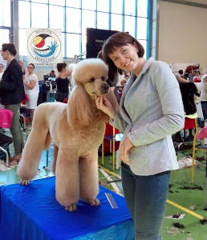
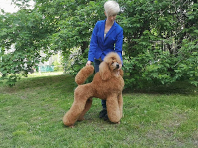

OFERTA
- strzyżenie
- trymowanie
- czesanie
- kąpiele
- czyszczenie uszu/usuwanie włosów z kanałów słuchowych
- obcinanie pazurków
- wizyty zapoznawcze
- porady w zakresie pielęgnacji, behawiorystyki i żywienia


Renata Kozłowska: Od 15 lat zawodowo zajmuje się pielęgnacją psów.
Mistrz w Zawodzie Groomer, wielokrotna laureatka międzynarodowych
konkursów groomerskich. W związku z licznymi wygranymi zdobyła tytuł
Groomer Roku 2015 i uzyskała wszystkie możliwe championaty.
Reprezentantka Polski w Drużynowych Mistrzostwach Świata w latach 2015 i
2017. We współpracy z Polskim Stowarzyszeniem Groomerów prowadziła
seminaria i warsztaty dla groomerów i miłośników zwierząt. Mimo
licznych osiągnięć wciąż rozwija się i poszerza swoje umiejętności.
Prywatnie miłośniczka psów i kotów. Zwierzęta to jej pasja a praca z
nimi to wielka przyjemność.

Ewelina Kozłowska: W 2017r. ukończyła kurs groomerski w Lavis Wiesława
Latoś, pod okiem Team Lavis pogłębiała wiedzę i szlifowała swój
warsztat. W 2018 wzięła udział w konkursie groomerskim w kategorii
początkujący na największym konkursie w Europie i stanęła na podium z
Pudlem standardowym. Stale poszerza swoje umiejętności. Hobbistycznie
zajmuje się pielęgnacją gryzoni w Specjalistycznej Przychodni Weterynaryjnej OGONEK. Z
sukcesami wystawia swoje psy łącząc pasję z zawodem.